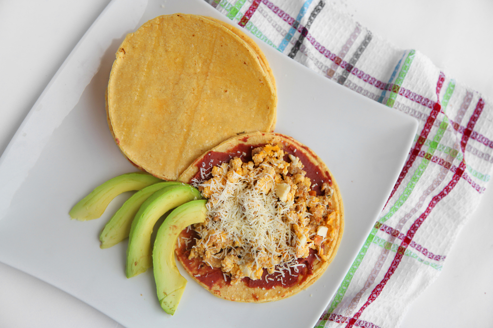

Burritas

Ingredients
- Corn tortillas
- Vegetable Oil
- 1 ripe banana
- 4 eggs
- 2 grilled chorizo
- 1/2 chopped onion
- 1/2 cup fried beans
- 1/4 cup cream butter
- 1/2 cup cheese
Directions
- Peel and cut the banana into slices and fry in oil until golden, then place the chorizos to fry and set aside.
- Preheat a frying pan, add oil and fry the onion, add the beans, fry for two minutes
- Beat the eggs, add a little butter, preheat a frying pan, add vegetable oil and cook the eggs.
- Heat the corn tortillas, place cheese between the two tortillas, place the beans, egg, banana, chorizo on top of a tortilla, and finish with a tortilla on top.